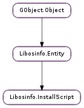

| static | new(id) |
| static | new_data(id, profile, templateData) |
| static | new_uri(id, profile, templateUri) |
| add_config_param(param) | |
| generate(os, config, cancellable) | |
| generate_async(os, config, cancellable, callback, *user_data) | |
| generate_command_line(os, config) | |
| generate_finish(res) | |
| generate_output(os, config, output_dir, cancellable) | |
| generate_output_async(os, config, output_dir, cancellable, callback, *user_data) | |
| generate_output_finish(res) | |
| get_avatar_format() | |
| get_can_post_install_drivers() | |
| get_can_pre_install_drivers() | |
| get_config_param(name) | |
| get_config_param_list() | |
| get_config_params() | |
| get_expected_filename() | |
| get_output_filename() | |
| get_output_prefix() | |
| get_path_format() | |
| get_post_install_drivers_signing_req() | |
| get_pre_install_drivers_signing_req() | |
| get_product_key_format() | |
| get_profile() | |
| get_template_data() | |
| get_template_uri() | |
| has_config_param(config_param) | |
| has_config_param_name(name) | |
| set_avatar_format(avatar) | |
| set_output_prefix(prefix) |
| Name | Type | Flags | Description |
|---|---|---|---|
| avatar-format | Libosinfo.AvatarFormat | r | Expected avatar format |
| path-format | Libosinfo.PathFormat | r | Expected path format |
| product-key-format | str | r | Product key format mask |
| profile | str | r/w/c | Install script profile name |
| template-data | str | r/w/c | Data for install script template |
| template-uri | str | r/w/c | URI for install script template |
None
| Name | Type | Access |
|---|---|---|
| parent_instance | Libosinfo.Entity | r |
Bases: Libosinfo.Entity
| Parameters: | id (str) – |
|---|---|
| Return type: | Libosinfo.InstallScript |
| Parameters: | |
|---|---|
| Returns: | an new install script |
| Return type: |
Construct a new install script from stylesheet data
| Parameters: | |
|---|---|
| Returns: | an new install script |
| Return type: |
Construct a new install script from a stylesheet URI
| Parameters: | param (Libosinfo.InstallConfigParam) – |
|---|
| Parameters: |
|
|---|---|
| Raises: | |
| Return type: |
| Parameters: |
|
|---|
| Parameters: |
|
|---|---|
| Returns: | The generated command line string, None otherwise. |
| Return type: |
Some install scripts need to pass a command line to the kernel, Such install scripts belong to OSs that provide paths to the kernel and initrd files that can be used to directly boot (http://wiki.qemu.org/download/qemu-doc.html#direct_005flinux_005fboot) the OS in order to pass the needed commandline to it.
| Parameters: | res (Gio.AsyncResult) – a Gio.AsyncResult |
|---|---|
| Raises: | GLib.GError |
| Returns: | the generated script, or None on error |
| Return type: | str |
| Parameters: |
|
|---|---|
| Raises: | |
| Returns: | a file containing the script |
| Return type: |
Creates an install script written in a file
| Parameters: |
|
|---|
| Parameters: | res (Gio.AsyncResult) – a Gio.AsyncResult |
|---|---|
| Raises: | GLib.GError |
| Returns: | a file containing the script, or None on error |
| Return type: | Gio.File |
| Returns: | The avatar format, or None if there is no restrictions on the format of avatar |
|---|---|
| Return type: | Libosinfo.AvatarFormat |
Some install scripts have restrictions on the format of the user avatar. Use this method to retrieve those restrictions in the form of an Libosinfo.AvatarFormat instance.
| Returns: | True if install script supports pre-installable drivers, False otherwise. |
|---|---|
| Return type: | bool |
Whether install script can install drivers at the very beginning of installation. This is needed for devices for which the OS in question does not have out of the box support for and devices are required/prefered to be available during actual installation.
| Parameters: | name (str) – name of the parameter |
|---|---|
| Returns: | the sought config param, if exists. None otherwise. |
| Return type: | Libosinfo.InstallConfigParam |
Get a config param from the config param’s list
| Returns: | the list of valid Libosinfo.InstallConfigParam parameters. Free with GLib.List.free () when done. The elements are owned by libosinfo. |
|---|---|
| Return type: | [Libosinfo.InstallScript] |
Get the list of valid config parameters for script.
| Returns: | the list of valid Libosinfo.InstallConfigParam parameters. |
|---|---|
| Return type: | Libosinfo.InstallConfigParamList |
Get the list of valid config parameters for script.
| Returns: | the expected script filename |
|---|---|
| Return type: | str |
Some operating systems (as Windows) expect that script filename has particular name to work.
| Returns: | the output script filename |
|---|---|
| Return type: | str |
Some operating systems are able to use any script filename, allowing the application to set the filename as desired. libosinfo provides this functionality by set the expected filename’s prefix using Libosinfo.InstallScript.set_output_prefix () function.
| Return type: | Libosinfo.PathFormat |
|---|
| Return type: | Libosinfo.DeviceDriverSigningReq |
|---|
If install script can install drivers at the end of installation, this function retrieves the requirement about signed status of drivers.
| Return type: | Libosinfo.DeviceDriverSigningReq |
|---|
If install script can install drivers at the very beginning of installation, this function retrieves the requirement about signed status of drivers.
| Returns: | Product key format mask, or None. |
|---|---|
| Return type: | str |
If this function returns a non-NULL string, it means that the script requires you to specify product registration key through Libosinfo.InstallConfig instance passed to script generation methods.
The returned string specifies the expected format of the product key like this:
@ - any character % - alphabet # - numeric character $ - alphanumeric character
All other characters represent themselves.
For example in case of installer for Microsoft Windows XP, you’ll get “$$$$$-$$$$$-$$$$$-$$$$$-$$$$$”. That means a product key consists of 24 alphanumeric characters and 4 ‘-‘ characters at (0-based) indices 5, 11, 17 and 23.
| Parameters: | config_param (Libosinfo.InstallConfigParam) – |
|---|---|
| Return type: | bool |
| Parameters: | avatar (Libosinfo.AvatarFormat) – |
|---|